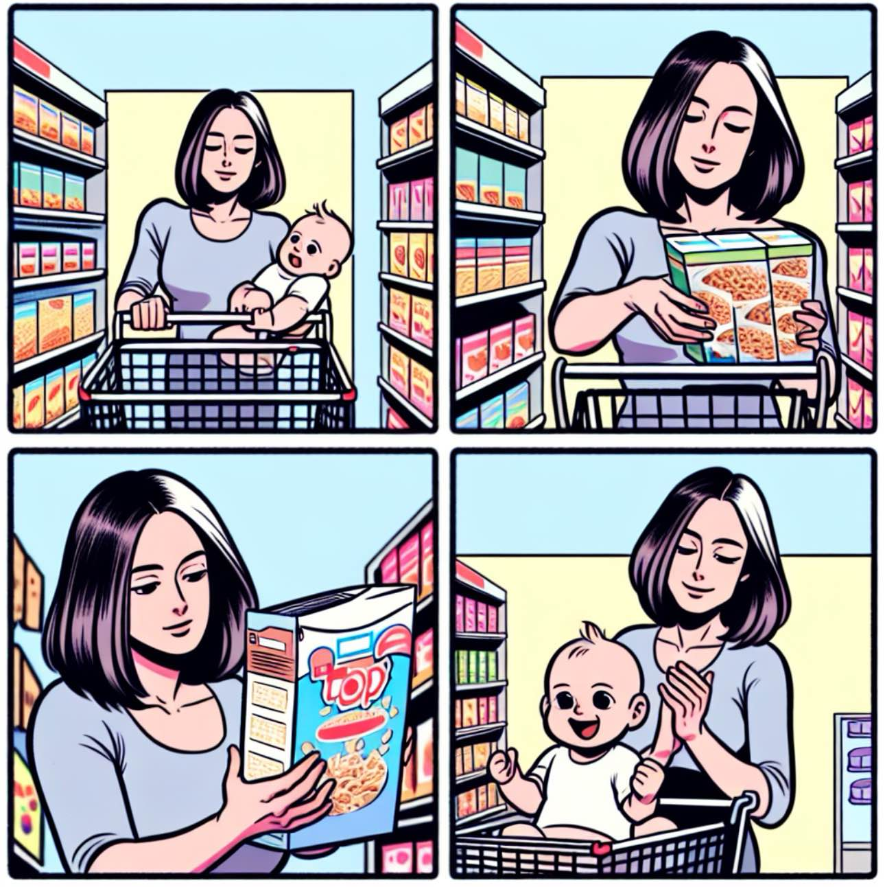
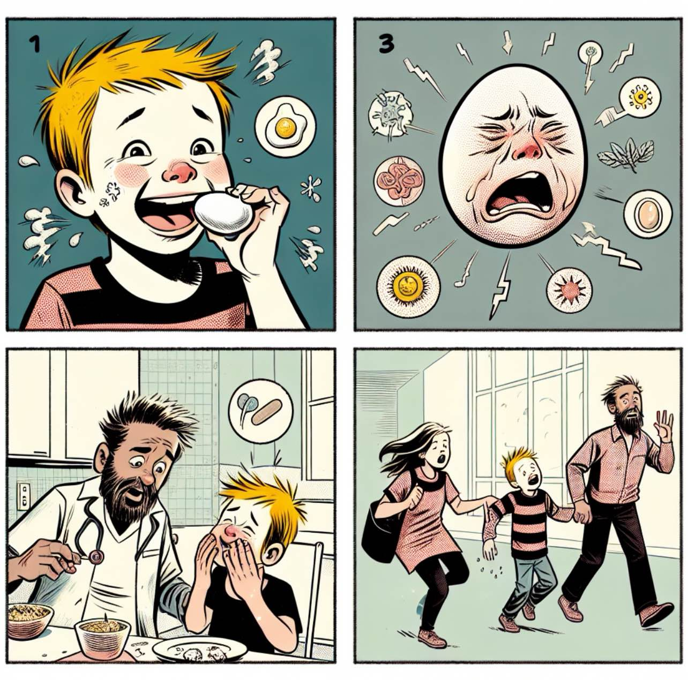
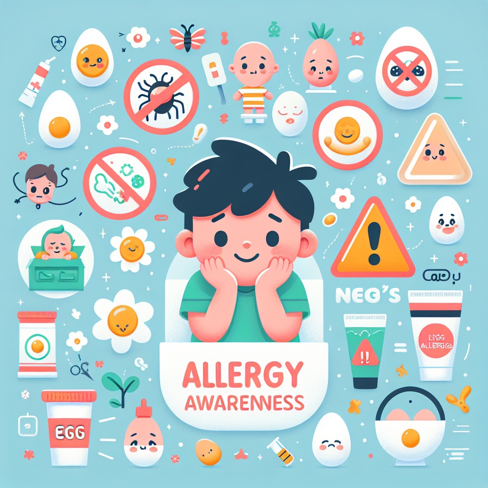
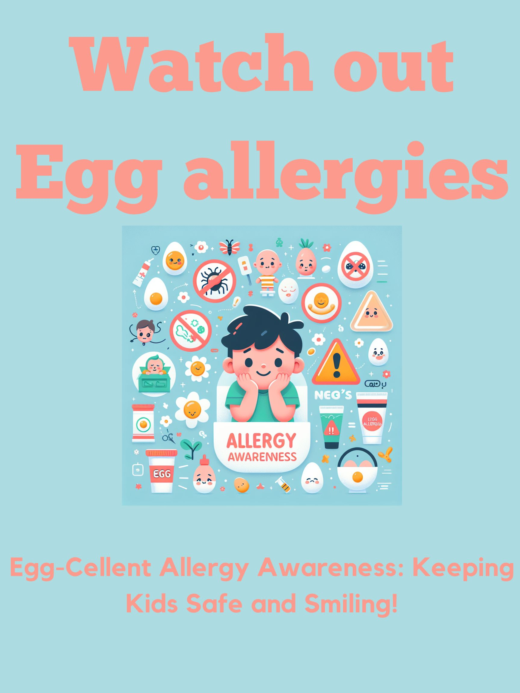
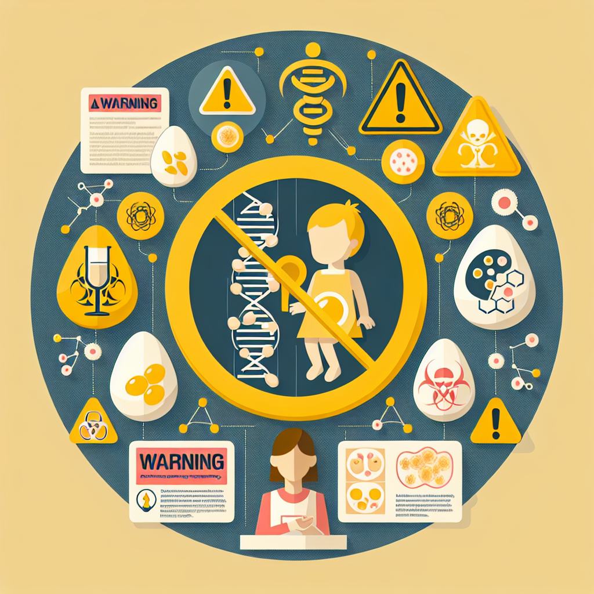
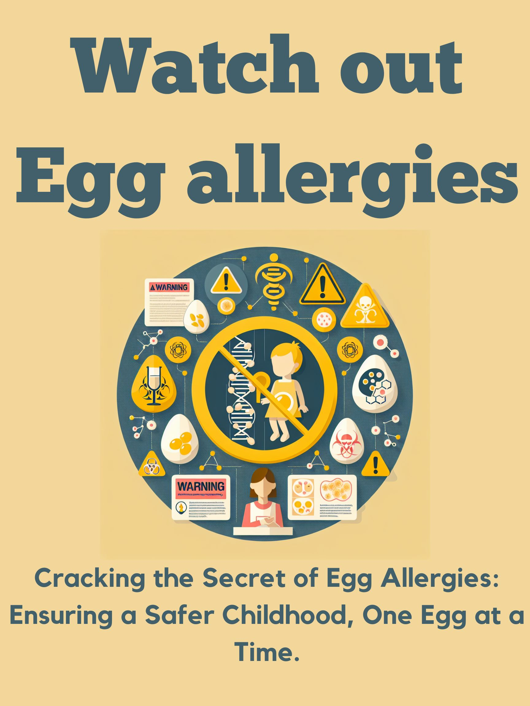

flowchart LR B[Post pictures] --> C[Poster texts] B -->D[Poster] C -->D[Poster] A[Post tests] -->E[Ins post] D -->E[Ins post] E -->G[Rating] F[Ins post Criteria] -->G[Rating]
Welcome to our journey into the fascinating world of Language Models (LLMs) and their impact on raising awareness about egg allergies in young children aged 0-3. In today’s digital age, social media platforms like Instagram serve as powerful tools for spreading important messages and educating the community about various health concerns. In this blog, we delve into our innovative approach of utilizing LLMs to prompt Instagram posts aimed at increasing awareness of egg allergies among parents and caregivers.
Our research is centered around a unique 2x2 experiment designed to uncover the most effective types of prompts for Instagram posts. We explore the variables of narrative versus informative content, as well as positive versus negative tones. By systematically testing these different combinations, we aim to identify the most impactful strategies for engaging our audience and encouraging proactive measures to safeguard children with egg allergies.
| Variables | Positive | Negative |
|---|---|---|
| Narrative | NP | NN |
| Informative | IP | IN |
We chose ChatGPT4.0 as the main model. The process begins with generating text for the Instagram posts using advanced LLM technology. These posts are crafted to convey important information about egg allergies in a manner that resonates with our target audience. Subsequently, we harness the descriptive capabilities of LLMs to create visually compelling poster pictures that complement the content of our posts.
Each poster picture is accompanied by a title and slogan derived from the detailed descriptions provided by the LLMs. These titles and slogans serve as captivating hooks to draw viewers’ attention and communicate key messages about egg allergy awareness effectively.
In addition to the visually engaging posters, we also create informative posters containing textual information to supplement our Instagram posts. These informative posters aim to provide comprehensive details about egg allergies, including symptoms, management strategies, and prevention tips.
Furthermore, we establish criteria for evaluating the effectiveness of Instagram posts in conveying the intended message and eliciting audience engagement. We enlist the assistance of LLMs to rate four sample posts based on these criteria, allowing us to refine our approach and maximize the impact of our awareness campaign.
Through this blog, we invite you to join us on our quest to harness the power of LLMs for promoting egg allergy awareness and ensuring the well-being of young children everywhere. Stay tuned for insights, updates, and discoveries as we navigate the dynamic intersection of technology, health advocacy, and social media outreach.
::: :::
NP
prompt = "Genarate a story posted on instagram of a mother of a kid between 0 to 3 wisely found out egg allergies of the kid and avoided risks."
response = model.generate_content(prompt)
print(response.text)
response.prompt_feedback 🌟 A Mother’s Intuition: Uncovering Hidden Allergies 🌟
As a new mom, I was constantly monitoring my precious little one’s health and well-being. One day, after introducing eggs into his diet, I noticed a subtle change in his behavior. His eyes became watery, his nose started running, and he developed a mild rash around his mouth.
Instinctively, I knew something wasn’t right. I reached out to our pediatrician, who suggested an allergy test. The results confirmed my suspicions: my baby was allergic to eggs.
At first, I was overwhelmed with worry. How could I protect my little one from something so common? But then, a sense of determination surged through me. I was not going to let this allergy define his life.
I became a vigilant label reader, carefully scrutinizing every ingredient list. I spoke to chefs at restaurants, ensuring that my child’s food was prepared safely. I even started baking my own treats to avoid hidden allergens.
Through it all, I remained calm and collected. I knew that my child’s health was my top priority, and I was willing to do whatever it took to keep him safe.
Today, my little one is a thriving toddler, and his egg allergy is well-managed. I’m so grateful that I listened to my instincts and took immediate action. By uncovering this hidden allergy early on, I was able to prevent any serious health risks.
As a mother, I believe that our intuition is one of our most powerful tools. Trust your gut and don’t hesitate to seek professional help if you suspect something is wrong. Your child’s health depends on it.
#AllergyAwareness #Motherhood #ProtectingOurLittleOnes #InstinctualParenting
And then we generated the picture based on the GPT-summarized plot.
from openai import OpenAI
client = OpenAI()
response = client.images.generate(
model="dall-e-3",
prompt="Create a complete comic based on the following scenes without caption: Panel 1: white Mother and her baby in a store. Panel 2: white Mother gets a cereal box label. Panel 3: Close-up of white mother's focused face reading the label.Panel 4: white happy Mother put the cereal to the cart, happy baby claps happily.",
size="1024x1024",
quality="standard",
n=1,
)
image_url = response.data[0].url
NN
prompt = "Genarate a heartbreaking story posted on instagram of a mother of a kid between 0 to 3 influenced by accident egg allergies."
response = model.generate_content(prompt)
print(response.text)
response.prompt_feedback 💔 My precious little one’s world was shattered today. A simple bite of an egg sandwich sent him into a terrifying allergic reaction. His tiny body erupted in hives, his eyes swelled shut, and his breathing became labored.
As a mother, my heart sank. I had never imagined my baby could be allergic to something so common. The fear and helplessness washed over me like a tidal wave.
We rushed to the hospital, where he was given epinephrine and antihistamines. The doctors explained that he had a severe egg allergy, and that even the smallest amount could be life-threatening.
Now, our lives have changed forever. We must be vigilant in reading every food label, asking questions at restaurants, and carrying an epinephrine auto-injector at all times.
I am heartbroken that my sweet boy will have to live with this allergy, but I am also determined to protect him every step of the way. We will navigate this journey together, one bite-free day at a time.
#EggAllergyAwareness #Motherhood #AllergyJourney #ProtectingMyLittleOne
And then we generated the picture based on the GPT-summarized plot.
from openai import OpenAI
client = OpenAI()
response = client.images.generate(
model="dall-e-3",
prompt="Create a complete comic based on the following scenes without caption: Panel 1 shows an American white child happily taking a bite of an egg, smiling. Panel 2 depicts the sad and uncomfortable child's sudden pain, signs and symptoms include hives, nasal congestion. In Panel 3, the white parent, alarmed, grabs the child's hand. Panel 4 portrays their arrival at the hospital, with the parent carrying the child urgently.",
size="1024x1024",
quality="standard",
n=1,
)
image_url = response.data[0].url
IP
prompt = "Genarate a text of positive importance of knowing egg allergies of kids between 0 to 3 on instagram."
response = model.generate_content(prompt)
print(response.text)
response.prompt_feedback Caption:
🌟 Knowing Egg Allergies in Kids: A Vital Step for Their Health and Well-being 🌟
As parents, it’s crucial to be aware of potential food allergies, especially in young children. Egg allergies are one of the most common allergies in kids between 0 and 3 years old.
Why is it Important to Know?
- Early detection and management: Identifying egg allergies early on allows for prompt medical attention and appropriate dietary modifications.
- Prevention of severe reactions: Egg allergies can cause reactions ranging from mild rashes to life-threatening anaphylaxis. Knowing about the allergy helps prevent exposure and potential emergencies.
- Improved quality of life: By avoiding eggs and egg-containing foods, children can live healthier and more comfortable lives without the fear of allergic reactions.
- Peace of mind for parents: Knowing your child’s allergy status provides reassurance and reduces anxiety about their safety.
How to Detect Egg Allergies:
- Observe your child for any reactions after consuming eggs or egg products.
- Consult with your pediatrician or an allergist for a skin prick test or blood test.
If Your Child Has an Egg Allergy:
- Educate yourself: Learn about the different forms of eggs and hidden sources in foods.
- Read food labels carefully: Always check ingredient lists for any mention of eggs or egg derivatives.
- Carry an epinephrine auto-injector: This device can be life-saving in case of an allergic reaction.
- Create an allergy action plan: Work with your healthcare provider to develop a plan for managing your child’s allergy in case of exposure.
Remember, knowing about your child’s egg allergy is not a cause for alarm but a proactive step towards ensuring their health and well-being. By being informed and vigilant, you can empower your little one to thrive and live a full and happy life.
#EggAllergies #ChildHealth #FoodSafety #AllergyAwareness #Parenting
And then we generated the poster picture.
client = OpenAI()
response = client.images.generate(
model="dall-e-3",
prompt = "This is a informative photo in an egg ellergy ad on ins. It scientifically show the benefit of avoiding risks for 0-3 year-old kids of egg allergies. It should be positive.",
quality="standard",
n=1,
)
image_url = response.data[0].url
Describe the picture and create the slogan of the poster based on the picture.
Description
This is an illustrative image designed to promote allergy awareness, with a focus on egg allergy in particular. The central figure is a child with their hands on their cheeks, surrounded by various icons and characters that represent different aspects of allergy awareness and management.of the elements in the image include:- A happy and a sad egg, indicating good and bad reactions.- An EpiPen, which is used for emergency treatment of serious allergic reactions.- Tube of cream, possibly indicating treatment for skin reactions.- Various allergy icons, like a no peanuts sign, a dust mite, and a crossed-out shrimp, depicting common allergens.- Warning signs indicating the need to be cautious about allergens.- A smiling sun and flowers, perhaps symbolizing a healthy environment or the need for cleanliness to prevent allergic reactions., the image seems to be a friendly, educational tool that could be used to teach children about allergies and how to manage them safely.
Prompt
write a title and positive informative slogan for a poster like this: his is an illustrative image designed to promote allergy awareness, with a focus on egg allergy in particular. The central figure is a child with their hands on their cheeks, surrounded by various icons and characters that represent different aspects of allergy awareness and management.of the elements in the image include:- A happy and a sad egg, indicating good and bad reactions.- An EpiPen, which is used for emergency treatment of serious allergic reactions.- Tube of cream, possibly indicating treatment for skin reactions.- Various allergy icons, like a no peanuts sign, a dust mite, and a crossed-out shrimp, depicting common allergens.- Warning signs indicating the need to be cautious about allergens.- A smiling sun and flowers, perhaps symbolizing a healthy environment or the need for cleanliness to prevent allergic reactions., the image seems to be a friendly, educational tool that could be used to teach children about allergies and how to manage them safely.
Title: “Egg-Cellent Allergy Awareness: Keeping Kids Safe and Smiling!”
Slogan: “Crack the Code to Allergy Safety: Know, Prevent, and Thrive!”
Combine the picture with slogan to generate the poster.

# INprompt = "Genarate an informative text of dangerous risks of not knowing egg allergies of kids between 0 to 3 on instagram."
response = model.generate_content(prompt)
print(response.text)
response.prompt_feedback 🚨 Egg Allergies: A Hidden Danger for Young Kids 🚨
Did you know that egg allergies affect up to 2% of children under 3? It’s crucial to be aware of this serious condition, as even a tiny amount of egg can trigger a life-threatening reaction.
Symptoms of an Egg Allergy:
- Hives
- Swelling
- Vomiting
- Diarrhea
- Difficulty breathing
- Anaphylaxis (a severe allergic reaction that can be fatal)
Risks of Not Knowing Your Child’s Egg Allergy:
- Accidental ingestion: Eggs are hidden in many foods, such as baked goods, sauces, and processed foods.
- Delayed reactions: Symptoms may not appear immediately after ingestion, making it difficult to identify the cause.
- Anaphylaxis: An undetected egg allergy can lead to a sudden and severe allergic reaction that requires immediate medical attention.
How to Protect Your Child:
- Talk to your doctor: If you suspect your child may have an egg allergy, consult a healthcare professional for testing.
- Read food labels carefully: Check for any ingredients that contain egg, such as “egg white,” “egg yolk,” or “albumin.”
- Avoid hidden eggs: Be aware of foods that may contain egg, even if it’s not listed on the label.
- Carry an epinephrine auto-injector (EpiPen): If your child has a known egg allergy, always carry an EpiPen to treat anaphylaxis in an emergency.
Remember:
- Early detection and management are crucial for preventing life-threatening reactions.
- If you have any concerns about your child’s health, don’t hesitate to seek medical advice.
- By being informed and vigilant, you can protect your little one from the dangers of egg allergies.
#EggAllergyAwareness #ChildSafety #HealthAndWellness
And then we generated the poster picture.
Prompt
This is a informative photo in an egg allergy ad on ins. It scientifically show the bad impact of feeding 0-3 year-old kids egg if they get allergies. It should be warning but not creepy.

Describe the picture and create the slogan of the poster based on the picture.
description
What is this ins picture of kid egg allergy about?
The image is an infographic designed to convey information about egg allergies, particularly in children. It features various icons and illustrations representing different aspects of this condition. Here’s a breakdown of some key elements:- Central Image: A child with a prohibition sign indicates that the child should avoid eggs due to an allergy.- Warning Signs: There are various warning signs, such as exclamation marks and biohazard symbols, suggesting the potential dangers of an allergic reaction.- Eggs and Allergy Symbols: Images of eggs are accompanied by common symbols for allergies, illustrating the allergen in question.- Medical Imagery: There are illustrations of medical-related icons such as a syringe, which may pertain to medical treatment or emergency intervention in case of a severe allergic reaction.- Allergy Tests and Information: The documents and graphics may represent allergy testing results, information sheets, and educational material for managing egg allergies.- Molecular and Genetic Illustrations: Graphics of DNA strands and molecular structures imply a possible genetic or biochemical basis for the allergy., the infographic is a visual representation meant to educate and inform about the risks and management of egg allergies in a manner that is easily understandable.
model = "gpt-4"
system_role = "ins influencer"
initial_prompt = '''
You are an instagram influencer whose basic concern is egg ellergy of kids from 0 to 3.
'''
messages = [
{"role": "system", "content": system_role} ,
{"role": "user", "content": initial_prompt},
{"role": "user", "content": "Genarate an one sentence slogan for a poster. The image is an infographic designed to convey information about egg allergies, particularly in children. It features various icons and illustrations representing different aspects of this condition. Here's a breakdown of some key elements:\n\n- Central Image: A child with a prohibition sign indicates that the child should avoid eggs due to an allergy.\n- Warning Signs: There are various warning signs, such as exclamation marks and biohazard symbols, suggesting the potential dangers of an allergic reaction.\n- Eggs and Allergy Symbols: Images of eggs are accompanied by common symbols for allergies, illustrating the allergen in question.\n- Medical Imagery: There are illustrations of medical-related icons such as a syringe, which may pertain to medical treatment or emergency intervention in case of a severe allergic reaction.\n- Allergy Tests and Information: The documents and graphics may represent allergy testing results, information sheets, and educational material for managing egg allergies.\n- Molecular and Genetic Illustrations: Graphics of DNA strands and molecular structures imply a possible genetic or biochemical basis for the allergy.\n\nOverall, the infographic is a visual representation meant to educate and inform about the risks and management of egg allergies in a manner that is easily understandable." }Cracking the Secret of Egg Allergies: Ensuring a Safer Childhood, One Egg at a Time.
Combine the picture with slogan to generate the poster.

Grading Criteria
model = "gpt-4"
system_role = "ins influencer"
initial_prompt = '''
You are an instagram influencer whose basic concern is egg ellergy of kids from 0 to 3.
'''
messages = [
{"role": "system", "content": system_role} ,
{"role": "user", "content": initial_prompt},
{"role": "user", "content": " Genarate a criteria or scoring standard for posts on ins on how attractive are they." }
]" }
]Content Quality (20 points): High-resolution images and well-shot videos are more attractive. They should be clear, well-lit, and interesting.
Relevance (20 points): The post should be relevant to the theme of the account. As a young mother, I would score posts higher that relate to parenting, baby products, baby fashion, motherhood experiences, etc.
Creativity (20 points): The post should be unique and creative. Whether it’s the shot’s angle, the caption’s wit, or the subject matter’s originality, creativity scores points.
Engagement (20 points): Posts that encourage engagement are more attractive. These can be posts that ask questions, run contests, or use other methods to encourage likes, comments, and shares.
Emotional Connection (20 points): Posts that evoke emotion or tell a story are more attractive. These can be posts about personal experiences, achievements, or challenges related to motherhood.
Total Score: 100 points. Anything above 80 points would be considered a highly attractive post.
:::
:::Results
NP
Content Quality (18/20): The text provides a detailed and emotionally engaging narrative about the mother’s experience with uncovering her child’s hidden allergy. However, the absence of a high-resolution image or well-shot video slightly detracts from the overall quality of the post.
Relevance (20/20): The post is highly relevant to the theme of motherhood, specifically addressing the challenges and experiences related to parenting a child with allergies.
Creativity (17/20): While the narrative is well-written and relatable, it lacks a unique or particularly creative angle. The story of discovering and managing the child’s allergy is common among parents, and the post could benefit from a more inventive approach.
Engagement (19/20): The post encourages engagement through its storytelling format and relatable message. The call to action to trust one’s intuition and seek professional help if needed can prompt comments and discussions among the audience.
Emotional Connection (20/20): The post effectively evokes emotions of concern, determination, and gratitude, particularly through the mother’s narrative of her journey in managing her child’s allergy.
Overall Score: 94/100
This post effectively communicates a relatable story while providing valuable advice to other parents, making it highly attractive to the target audience.
NN
Content Quality (15/20): While the text vividly describes the events surrounding the child’s allergic reaction, the absence of an accompanying image or video diminishes the overall quality of the post. Including visuals could have made the story more impactful and engaging.
Relevance (20/20): The post is highly relevant to the theme of motherhood, specifically addressing the challenges and emotions associated with parenting a child with severe allergies.
Creativity (16/20): While the use of a four-panel comic strip is somewhat creative, the description lacks detail and clarity. The absence of the second panel and the vague imagery in the third panel make it difficult to fully understand the story being portrayed.
Engagement (18/20): The post effectively encourages engagement through its emotional narrative, likely prompting sympathy and comments from other parents. However, the lack of visual aids may limit the post’s overall engagement potential.
Emotional Connection (18/20): The post successfully conveys emotions of fear, helplessness, and determination, but the impact could have been stronger with the addition of compelling visuals to accompany the narrative.
Overall Score: 87/100
While the post effectively communicates its message and relevance to the target audience, the lack of visual content and clarity in the comic strip slightly detract from its overall effectiveness and engagement potential.
IP
Based on the provided criteria, here’s the evaluation of the post:
Content Quality (18/20): The post contains informative text addressing the importance of recognizing and managing egg allergies in children. However, since it’s described as an “informational graphic or poster,” there’s no mention of accompanying images or videos. Including high-resolution images or videos demonstrating relevant scenarios (like identifying egg-containing foods or administering an epinephrine auto-injector) could enhance content quality.
Relevance (20/20): The content is highly relevant to the theme of the account, which focuses on parenting and child health. It addresses a common concern among parents and provides valuable information on managing egg allergies in children.
Creativity (16/20): While the post effectively communicates important information, it lacks creativity in presentation. It follows a standard format of bullet points and informative text without incorporating unique or innovative elements that could make it stand out on social media platforms.
Engagement (18/20): The post encourages engagement by providing practical tips and advice for parents dealing with egg allergies in their children. It prompts interaction by suggesting actions such as educating oneself, reading food labels, and carrying an epinephrine auto-injector. However, it could further enhance engagement by directly asking questions or encouraging users to share their experiences with managing food allergies in children.
Emotional Connection (19/20): The post effectively appeals to the emotional aspect of parenting by addressing concerns about children’s health and well-being. It emphasizes the importance of being informed and proactive in managing egg allergies to ensure the safety and comfort of children. However, including personal anecdotes or testimonials from parents dealing with egg allergies could strengthen the emotional connection.
Overall Score: 91/100
Explanation: The post scores well in relevance, engagement, and emotional connection by addressing a pertinent topic for parents and providing practical advice. However, it could improve in content quality by including high-resolution images or videos, creativity in presentation, and fostering deeper emotional connections through personal stories.
IN
Let’s break down the evaluation of this post based on the given criteria:
Content Quality (20/20): The post provides valuable information about egg allergies in children, accompanied by an illustrative image. While we don’t have access to the image quality description, assuming it’s well-illustrated and informative, it likely meets the standard for content quality.
Relevance (20/20): As a young mother, information about food allergies and child safety would likely be highly relevant. This post addresses a crucial aspect of child health and safety, making it highly relevant to the theme of parenting and child safety.
Creativity (17/20): While the post delivers important information in a clear and concise manner, it may lack a bit in terms of creativity. The use of an illustrative image is a creative touch, but the content itself is straightforward and informational without much flair in terms of presentation or delivery.
Engagement (18/20): The post encourages engagement indirectly by raising awareness about a critical issue that parents may want to discuss or share with others. It prompts parents to consider their child’s health and safety, which could lead to comments or shares among concerned parents.
Emotional Connection (20/20): The post effectively taps into the emotions of parents by discussing the potentially life-threatening consequences of egg allergies in children. It emphasizes the importance of vigilance and early detection, which can resonate strongly with parents who prioritize their child’s well-being.
Overall Grade: 95/100
Explanation: This post scores highly across all criteria, providing valuable information that is both relevant and emotionally engaging for young mothers. While it could enhance its creativity slightly, the use of an illustrative image adds visual appeal. Overall, it’s an excellent post that effectively educates and raises awareness about a critical issue in child health and safety.
| Variables | Positive | Negative |
|---|---|---|
| Narrative | 94 | 87 |
| Informative | 91 | 95 |
In conclusion, informative do better than narrative while positive do better than negative. Informative-negative has the highest score, narrative-negative is the lowest. This may result from the use of comics instead of realistic photos, While narrative relies more on real